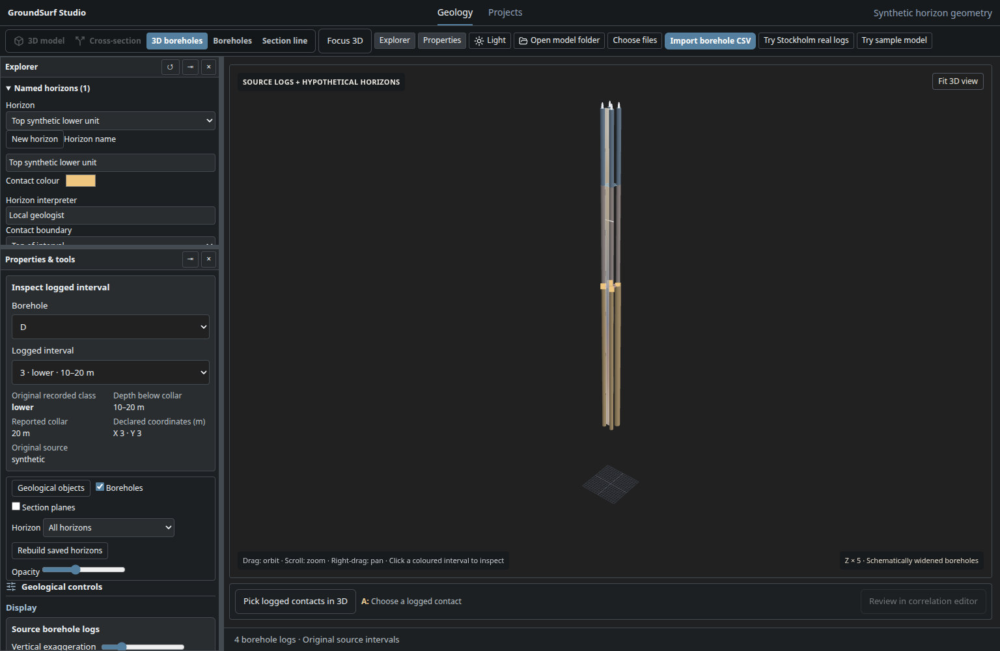
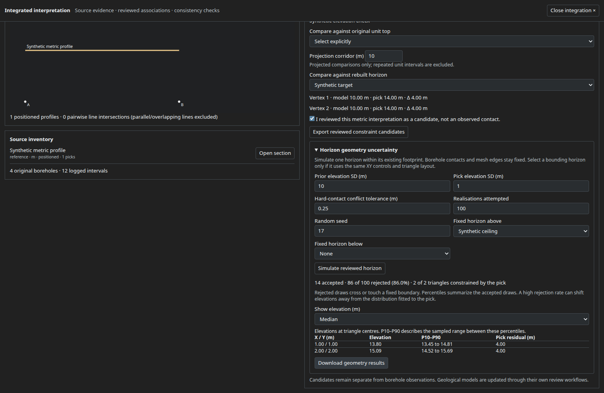
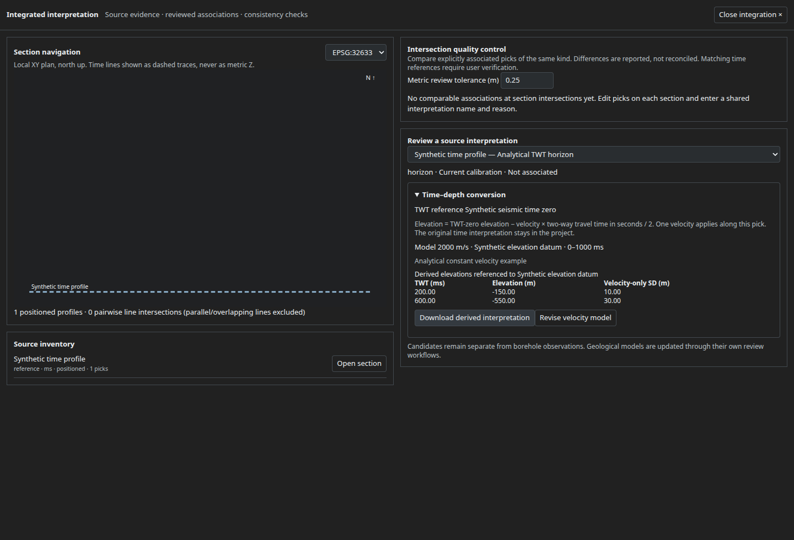

0.10.1 Public Trial
GroundSurf Studio
Free geological interpretation and modelling.
Explore boreholes, interpret geological sections and build models you can trace back to their source evidence.
No installation. No account. Geological data stays on your device.
1.45 MB · Tested in Chromium and Firefox on Ubuntu 24.04

Start with a synthetic project
Open the example from Projects → Open complete project. Pick logged contacts, rebuild the saved horizons, and inspect a converted seismic interpretation.


Desktop editions
Use the browser or portable HTML while desktop release checks are underway. Native geostatistics workers and the local ParaView connection use the desktop edition and separate installations.
Experimental software. Geological models depend on the evidence, interpretation and modelling assumptions. Review results independently before using them for engineering decisions.